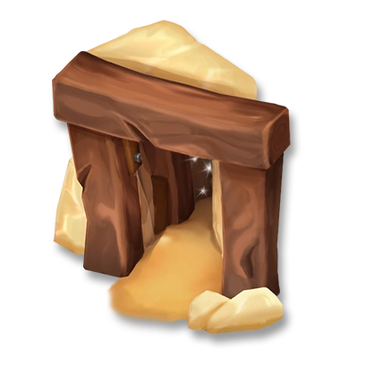

The Mine is a production building unlocked at experience level 24. It costs 21,000 💰 and takes 1 day 11 h (or 71 💎) to repair the Mine. It gives players 28 ⭐ when completed.
Dynamite
Level 5
🧨 Yields 2 ores
💰 25
⭐ Can clear lone rocks
⭐ Can clear lone rocks
TNT Barrel
Level 5
🧨 Yields 3 ores
💰 72
⭐ Can clear groups of rocks
⭐ Can clear groups of rocks
Shovel
Level 8
🧨 Yields 4 ores
💰 108
⭐ Clears bogs & ponds
⭐ Clears bogs & ponds
Pickaxe
Level 34
🧨 Yields 5 ores
💰 126
⭐ Use in mine only
⭐ Use in mine only